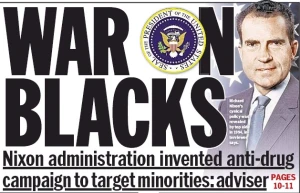
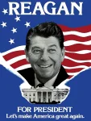
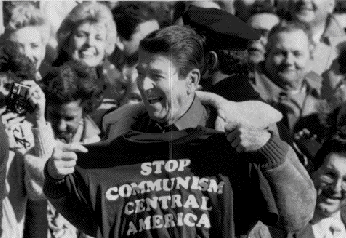
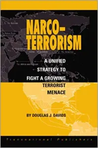

The Americanisation of drug control.
The process of international prohibition was radically altered in the late 1960s after a decade of rising crime rates, increasing drug use and political unrest by students and minority groups in the United States. As Michael Gambone (2013:178-179) observes President Richard Nixon seized on the nationalisation of these issues by warning of the “cultural calamity” that was coming and how illegal drugs were “public enemy number one”.

With drugs now linked to the rising crime rates the Federal drug institutions were reorganised under the National Institute on Drug Abuse and the DEA in the process institutionalising an expanding nationwide federal anti-drug bureaucracy with a focus on punishment rather than treatment (ibid.179). Domestically it allowed Nixon to crack down on dissent that the political elite again viewed as a threat to the status quo (Watt & Zapeta 2012:36). This legitimized direct U.S. actions in foreign nations while predicating aid they gave to foreign countries on cooperation in the drug war (Gambone 2013:180)
In this context expansion into foreign nations would became a major strategy for the DEA and other tentacles of the U.S. drug control apparatus. A strategy that was helped by the U.S. pushing for the 1971 UN convention and 1972 amendment that further strengthened international prohibition. It was also helped by the fact that global drug use had been increasing and this was the only method available for most nations to deal with the issue (Collins 2015:9). This allowed the DEA to advance the institutionalisation of specialised drugs units in the foreign nation's police. Second there was a change in the form of operations through the transfer of techniques as practised by U.S. law enforcement to foreign agencies. Finally many nations began to reform legal systems to legitimatise imported U.S. techniques. The end result has been, what Peter Andreas & Ethan Nadelmann term, the Americanization of global counter-narcotics enforcement (2006:126-131).
The next significant change in the War in Drugs came during the United States presidency of Ronald Reagan.

As the Cold War slowly wound down during the 1980s Bovine (2004:119-120) argues that the U.S. in a relative decline due to the structural crisis of the 1970s began to promote the war on drugs as the solution to the nation’s economic ills. A reaction to the symptoms of decline that sought to reaffirm the nation’s liberal democratic legitimacy by once again situating the counterculture of drugs as alien to traditional U.S values. A strategy that facilitated The Reagan administration, behind the developing narrative of narco-terrorism, to divert attention away from the real roots of the decades long drug scare and economic decline.

Narco-terrorism was a critical narrative as it allowed the Cold War idea of east versus west to be re-conceptualised in a north versus south framework. A paradigm far more effective in terms of classifying Latin America as a national security threat to the United States. Henceforth structural issues that caused narco-terrorism, underdevelopment, were now an issue of concern for the global prohibition paradigm. Which was increasing being militarised by U.S. legislators who gradually brought the U.S. military into drug interdiction. Unenthusiastic at first it slowly began to accept its new role it as it looked for a new function post-Cold War (ibid.121-130). Moves that were further legitimised on the international stage by the 1988 UN Convention against Illicit Traffic in Narcotics Drugs and Psychotropic Substances that further obliged signatories, 189 to date, to employ criminal sanctions in relation to illicit narcotics.

Seemingly irrelevant in the aftermath of the September 11 2001 attacks on the United States the drug prohibition apparatus nevertheless redefined itself by grasping onto the mantle of narco-terrorism. Andreas and Nadelmann (2006:197) posit that after that tragic day narco-terrorism took on renewed importance and helped reinforce the new militarisation of prohibition. Whereas in the 1990s military involvement in prohibition focused solely on the drug interdiction now it was acceptable to widen its remit into counter-insurgency (COIN) especially in Colombia. Prohibition was now part of the wider U.S. strategy to bring order to unstable areas around the globe. The danger here is that global prohibition's increasing militarization and subordination to the wider goals of U.S. foreign policy will become institutionalised (ibid.198-199).
References: